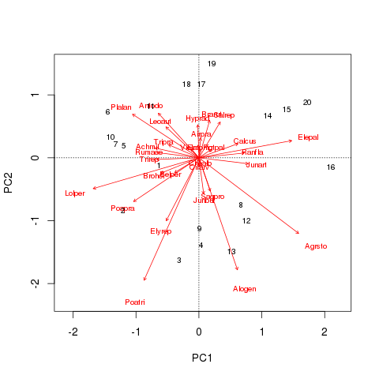
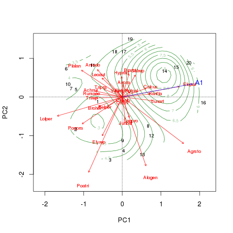
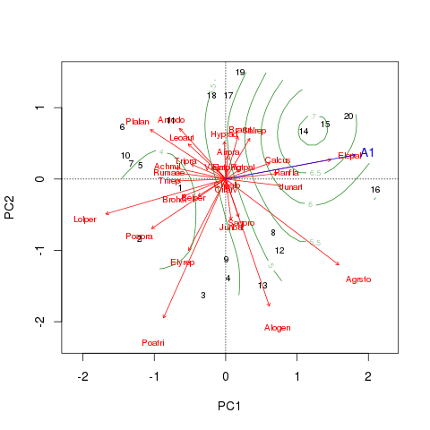

What is ordisurf() doing…?
Posted in
Tagged
Blogroll
I’m writing this post for two reasons: i) someone searched on Google for the term ‘what is ordisurf doing’ and ended up on my blog, and ii) because I have been on the receiving end of reviewers comments on a paper I co-authored where they didn’t know what ordisurf() was doing either! It is hardly surprising that people who don’t know R or haven’t studied the code or the examples in the vegan documentation do not realise what ordisurf() is trying to do as there isn’t a paper in the scientific literature explaining the method. Whilst a solution to that part of the problem will have to wait until Jari, Dave Roberts and I get our acts together and write one, this post might be useful in the interim.
Before direct gradient analysis or canonical ordination was invented/used in ecology, the standard approach to analysing multivariate ecological data was to ordinate them using PCA or CA, for example, and then relate the separate, important axes of that ordination with a set of environmental variables. A multiple regression was often used to relate the two, with ordination axis score taken as the response variable and the set of environmental variables as the predictors. This is problematic for methods like nMDS that don’t have axes, where we should consider the k dimensions of the solution as a whole rather than as independent “axes” of variation, which is where ordisurf() comes in.
So we have something tangible to work with in the ensuing discussion, lets fit a simple PCA to the classic Dutch Dune Meadows data set, available in vegan, and display the resulting biplot
require(vegan)
data(dune)
data(dune.env)
dune.pca <- rda(dune)
biplot(dune.pca, scaling = 3)
For these data the main continuous, quantitative variable is A1, the thickness of the soil A1 horizon. The envfit() can be used to project a biplot arrow for this variable into the ordination
set.seed(17)
dune.ev <- envfit(dune.pca ~ A1, data = dune.env)
plot(dune.ev)The result of the vector fitting is shown below, indicating borderline significance for the A1 horizon
R> dune.ev
***VECTORS
PC1 PC2 r2 Pr(>r)
A1 0.98316 0.18274 0.2632 0.063 .
---
Signif. codes: 0 ‘***’ 0.001 ‘**’ 0.01 ‘*’ 0.05 ‘.’ 0.1 ‘ ’ 1
P values based on 999 permutations.
As this is an unconstrained ordination, there is no reason at all to assume that the values of the A1 horizon vary in a linear fashion across the biplot. Instead, it might be better to fit a smooth response surface of A1 values over the limits of the biplot. For that we use ordisurf().
dune.sf <- ordisurf(dune.pca ~ A1, data = dune.env, plot = FALSE, scaling = 3)
biplot(dune.pca, scaling = 3)
plot(dune.ev)
plot(dune.sf, col = "forestgreen", add = TRUE)Combining all the various plotting elements thus far we get this figure

The fitted surface is far from linear! The object returned by ordisurf() is an augments object of class "gam" from the mgcv package, so we can use methods from that package to interrogate the result
R> summary(dune.sf)
Family: gaussian
Link function: identity
Formula:
y ~ s(x1, x2, k = knots)
<environment: 0x5df9e50>
Parametric coefficients:
Estimate Std. Error t value Pr(>|t|)
(Intercept) 4.8500 0.3567 13.6 2.1e-08 ***
---
Signif. codes: 0 ‘***’ 0.001 ‘**’ 0.01 ‘*’ 0.05 ‘.’ 0.1 ‘ ’ 1
Approximate significance of smooth terms:
edf Ref.df F p-value
s(x1,x2) 7.583 8.621 1.94 0.147
R-sq.(adj) = 0.464 Deviance explained = 67.8%
GCV score = 4.4577 Scale est. = 2.5448 n = 20
Here we also see that there is little evidence to reject the null hypothesis. So what is ordisurf() actually doing? It is doing nothing more than fitting the following model using the gam() function
require(mgcv)
scrs <- data.frame(scores(dune.pca, display = "sites", scaling = 3))
dat <- with(dune.env, cbind(scrs, A1))
mod <- gam(A1 ~ s(PC1, PC2, k = 10), data = dat)Line 1 loads the mgcv package. In line 2 we extract the site scores on PCA axes 1 and 2 using symmetric scaling (scaling = 3) and convert to a data frame. Then we column-bind the soil A1 horizon thickness data into object dat, which we can pass as the data object in the call to gam(). The final line of code (line 4) fits the response surface model using a model formula and a 2D smooth on the PCA axis 1 and 2 sites scores. We restrict the complexity of this smooth using k = 10 as there are only 14 unique values for A1 and the default were starting with a smooth with more degrees of freedom than unique data points.
It should now be clear that we fit a model to predict the soil A1 horizon thickness using a 2-D smooth of the PCA site scores on axes 1 and 2 as the predictor variable. This is backwards to how we might conventionally think of the problem of relating explanatory variables to ordination axes, but it is logical if you think of the model as saying “given the main pattern in the species composition described by ordination axes, how well does this pattern explain variation in response variable at the sites.”
In newer versions of vegan (>= 1.17-9) we now provide access to more of the functionality provided by Simon Wood’s mgcv package for fitting GAMs:
- you can alter the penalty used in the GCV routine that selects the degree of smoothness in the fitted smooth function (the response surface) via argument
penalty. A penalty of 1.4 degrees of freedom per knot is often suggested if greater penalty on complex smooths is desired (penalty = 1.4); ordisurf()now accepts themethodargument ofgam(). Simon’s latest advice to me was that doing the smoothness selection via Marginal (Maximum) Likelihood (ML) or Restricted Maximum Likelihood (REML) gave the most reliable p-values on the smooth functions. To use this form of model fitting instead of GCV, supplymethod = "ML"ormethod = "REML"in theordisurf()call;- By default,
gam()can penalize smooths back to linear functions/surfaces but no further. An additional penalty term can be added to the smoothness selection procedure so that smooths can be penalised all the way back to zero degrees of freedom, effectively removing those terms from the model. This is a formal means of model selection. To turn this feature on, addselect = TRUEto theordisurf()call.
As a final illustration, we compare the response surface fitted earlier with one fitted using ML smoothness selection and the extra penalty term
dune.sf2 <- ordisurf(dune.pca ~ A1, data = dune.env, plot = FALSE, scaling = 3,
method = "ML", select = TRUE)
biplot(dune.pca, scaling = 3)
plot(dune.ev)
plot(dune.sf2, col = "forestgreen", add = TRUE)We get a similar pattern to before

but the surface is a lot less complex using approximately 4.5 degrees of freedom compared with approximately 8.7 in dune.sf. This doesn’t alter our interpretation of the significance of the relationship between the plant composition and A1 horizon thickness, however.
R> summary(dune.sf2)
Family: gaussian
Link function: identity
Formula:
y ~ s(x1, x2, k = knots)
<environment: 0x61d67d8>
Parametric coefficients:
Estimate Std. Error t value Pr(>|t|)
(Intercept) 4.8500 0.3958 12.26 2.24e-09 ***
---
Signif. codes: 0 ‘***’ 0.001 ‘**’ 0.01 ‘*’ 0.05 ‘.’ 0.1 ‘ ’ 1
Approximate significance of smooth terms:
edf Ref.df F p-value
s(x1,x2) 3.519 4.999 1.883 0.156
R-sq.(adj) = 0.34 Deviance explained = 46.3%
ML score = 41.909 Scale est. = 3.1326 n = 20
It remains to be seen whether we can trust the p-values that mgcv provides for predictor data derived from an ordination. Preliminary simulations that Jari Oksanen and I have made suggest the p-values have the right Type I error rate when we use randomly generated data with no relationship to the ordination axes. However, we have only just started this work and those are the sorts of results that are best presented for peer review and not relegated to a blog post. I hope that goes some way to explaining what on Earth it is that ordisurf() does…
Social